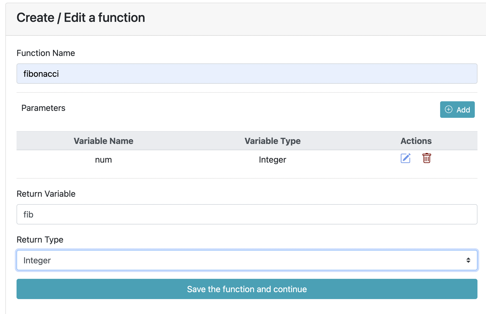
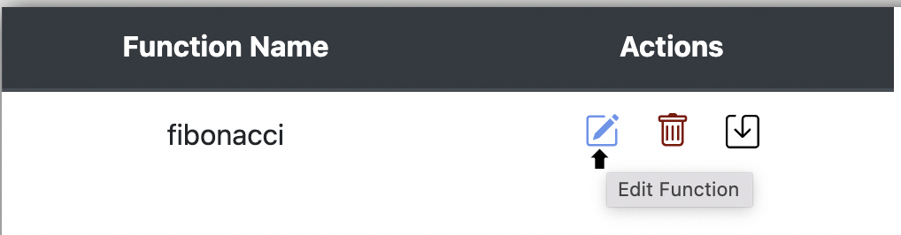

Flowgramming

Flowgramming is a platform-independent graphical authoring tool which allows users to draw and execute programs using flowcharts.
Why Flowgramming?
For the novice programmer, it is usually difficult to de-link the programming logic from the syntax of the programming language. This often leads to students memorizing code rather than understanding the logic and designing solutions. Flowgramming was built in an effort for beginner and novice programmers to understand programming logic and develop algorithmic thinking & problem solving skills without the hassle of learning the code syntax.
This site serves as an user manual on how to use the Flowgramming web application.
Features
- Easy and intuitive to understand and use
- Platform independent
- Programming logic support (Condition,Loops,etc.)
- Chat based input and output window
- Arrays (1D and 2D)
- Flexible expressions and all data types (including strings) supported
- Dedicated variable watch window to see all variable changes
- Specialized string Functions
- Function manager allows custom definition of multiple functions
- Can save and load all developed flowgrams (saved with extension ".fgmin")
Contact
flowgramming@googlegroups.com
Mentor
Contributors
How to create a block in Flowgramming?
- To add a block to the flowgram graph, you need to double click on the link (arrow).
- A pop up will appear where in you can choose the type of block you want to add.
- Select the block again to add the parameters
- Click ok to save the block.
.png)
Editing a block's properties
When you add a block to the graph, the next thing you would want to do is set some properties on the block. For the same, you need to double-click on the block.
You will get a pop-up to edit the properties of the block, depending on its type. For instance, if you double-click on a declaration block, you would see fields to enter the variable name, its type, and length if it is an array.
After entering the values, when you press OK, you will see the block updated with its properties on the flowgram.

Declaring multiple variables
If you would like to declare multiple variables of same type
in the same block, you need to use comma(,) to separate the variable names.
For example, declaring a,b,c of type integer will look like this.
And the flowgram will look like :
Deleting a block
If you want to delete a block, first double-click on the block [Say the assigment block].
You will get a pop-up to edit the properties of the block, depending on its type. On the bottom left, a delete button is present. Click on it to delete the block.

Once clicked, you will see the block taken out of the flowgram.
Supported data types
- Integer
- Float
- Character
- String
- One dimensional and two-dimensional arrays
For selecting the data type, choose declaration block and expand the datatype dropdown
If the variable needs to be an array, you will need to mark the checkbox as shown in the picture, and choose the appropriate dimensions.

In-built string functions
-
String concatenation
-
Declare strings x, y, z
-
Take input for x, y
-
Choose assignment block and write the code
z = strcat(x,y)
-
-
Substring
-
Declare strings x, y
-
Take input for x
-
Choose assignment block and write the code
y = x.substr(0,3)
-
-
String compare
-
Declare strings x, y and integer z
-
Take input for x, y
-
Choose assignment block and write the code
z = strcmp(x,y)
-
-
String length
-
Declare string x and integer y
-
Take input for x
-
Choose assignment block and write the code
y = strlen(x)
-
-
To Ascii
-
Declare string x and integer y
-
Take input for x
-
Choose assignment block and write the code
y = toAscii(x[0])
-
-
To Char
-
Declare an integer x and character y
-
Take input for x
-
Choose assignment block and write the code
y = toChar(x)
-
-
To lower case
-
Declare strings x, y
-
Take input for x
-
Choose assignment block and write the code
y = toLowerCase(x)
-
-
To upper case
-
Declare strings x, y
-
Take input for x
-
Choose assignment block and write the code
y = toUpperCase(x)
-
In-built string functions
-
Absolute
-
Declare integers x, y
-
Take input for x, y
-
Choose assignment block and write the code
x = abs(y)
-
-
Power
-
Declare integers x,y and z
-
Take input for x, y
-
Choose assignment block and write the code
z = pow(x,y)
-
-
Square Root
-
Declare integers x, y
-
Take input for x, y
-
Choose assignment block and write the code
x = sqrt(y)
-
-
Signum
- Declare integers x, y
- Take input for x, y
- Choose assignment block and write the code
x = sgn(y)

-
Natural Log
- Declare integers x, y
- Take input for x, y
- Choose assignment block and write the code
x = ln(y)
-
Log
-
Declare integers x,y and z
-
Take input for x, y
-
Choose assignment block and write the code
z = log(x,y)
-
-
Sin
-
Declare integers x, y
-
Take input for x, y
-
Choose assignment block and write the code
x = sin(y)
-
-
Cos
-
Declare integers x, y
-
Take input for x, y
-
Choose assignment block and write the code
x = cos(y)
-
-
Tan
-
Declare integers x, y
-
Take input for x, y
-
Choose assignment block and write the code
x = tan(y)
-
-
Arcsin
-
Declare integers x, y
-
Take input for x, y
-
Choose assignment block and write the code
x = arcsin(y)
- Arccos
-
Declare integers x, y
-
Take input for x, y
-
Choose assignment block and write the code
x = arccos(y)
- Arctan
-
Declare integers x, y
-
Take input for x, y
-
Choose assignment block and write the code
x = arctan(y)
- Ceil
-
Declare integer x, float y
-
Take input for x, y
-
Choose assignment block and write the code
x = ceil(y)
- Floor
-
Declare integers x, float y
-
Take input for x, y
-
Choose assignment block and write the code
x = floor(y)
- Round
-
Declare integers x, float y
-
Take input for x, y
-
Choose assignment block and write the code
x = round(y)
-
Second parameter denotes number of digits after floating point
- Random
- Declare integers x, y
- Take input or assign value for y
- Choose assignment block and write the code
x = random(y)
<img src="images/random.png" width="200" />
Operators
Flowgramming supports different math operations such as '+', '-', '*', '/', '%'
-
The '+' operator
- The '+' operator is used to perform the addition operation.
- Declare three integers x,y and z.
- Assign a value to x and y
- Assign z = x+y
- z contains the sum of x and y
-
The '-' operator
- The '-' operator is used to perform the subtraction operation.
- Declare three integers x,y and z.
- Assign a value to x and y
- Assign z = x-y
- z contains the difference of x and y

-
The '*' operator
- The '*' operator is used to perform the multiplication operation.
- Declare three integers x,y and z.
- Assign a value to x and y
- Assign z = x*y
- z contains the product of x and y
-
The '/' operator
- The '/' operator is used to perform the division operation.
- Declare three integers x,y and z.
- Assign a value to x and y
- Assign z = x+y
- z contains the quotient of x/y

-
The '%' operator
- The '%' operator is used to perform the modulus operation.
- Declare three integers x,y and z.
- Assign a value to x and y
- Assign z = x%y
- z contains the remainder of x/y

User Defined Functions
User defined functions need to be called only inside a Function block.
-
Manually Adding a Function
-
Enter the name for the function.
-
Add multiple parameters by entering the variable name and variable type.
-
Enter the return variable and the variable type.
-
Save the function and continue.

-
-
Uploading a Function
- Click the upload button to upload a pre-existing function.

-
Updating a Function
-
To update an existing function, click the edit button in the function manager.
-
Update the different parameters.
-
Save the function and continue.

-
-
Downloading a Function
- Click the download button to download the function.
-
Deleting a Function
- Click the delete button to delete an existing function.
Keywords
These are in-built keywords in Flowgramming. Ensure that variable names aren't one of these.
- array
- auto
- break
- case
- catch
- char
- cin
- const
- continue
- cout
- default
- do
- else
- enum
- false
- float
- for
- foreach
- if
- in
- int
- input
- let
- list
- long
- new
- None
- not
- null
- printf
- register
- return
- scanf
- scanner
- short
- signed
- sizeof
- static
- string
- struct
- switch
- throw
- true
- typedef
- union
- unsigned
- var
- void
- volatile
- while
Uploading an .fgmin file
The flowgramming application supports upload by clicking the upload button on the nav bar.

Select the '.fgmin' file of your preference to upload into the website.
Downloading an .fgmin file
The flowgramming application supports download by clicking the download button on the nav bar.
By default, '.fgmin' files are untitled and will be saved as 'Untitled.fgmin'. In order to save them by a different name, please follow the instructions as per your current browser.
-
Google Chrome
- Click on the icon on the top right corner and choose Settings from the dropdown list.
.png)
- Click on advanced settings
- This will expand the settings list. Scroll down to the Downloads section. Then check the box next to Ask where to save each file before downloading.
- Google Chrome will then be updated to open a Browse Window each time a file is downloaded.
- Click on the icon on the top right corner and choose Settings from the dropdown list.
-
Mozilla Firefox
- Click on the icon in the top right corner and choose Options.
- Then check the circle next to Always ask me where to save files.
.png)
- Firefox will now open a Browse Window as you download files.
Examples
1. Add Two Numbers

2. Subtract Two Numbers

3. Greater of Two Numbers
4. Are Two Numbers Equal

5. Sum of Array

6. Function for Adding Two Numbers

7. Check if character exists in String
8. Recursion


9. Loops


10. 1d Array
11. Math Functions
12. String Functions